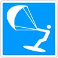

§ 8.13 Verbot des Kitesurfens
Binnenschifffahrtsstraßen-Ordnung
1. Jede Betätigung, bei der eine Person, von einem Drachen oder Fallschirm gezogen, auf einem Surfboard, auf Wasserskiern oder auf sonstigen Gegenständen über das Wasser gleitet (Kitesurfen), ist verboten. | |
2. Auf Wasserstraßen im Anwendungsbereich der Kapitel 21, 22 und 24 kann die Generaldirektion Wasserstraßen und Schifffahrt das Kitesurfen ganz oder teilweise erlauben, soweit die übrige Schifffahrt nicht beeinträchtigt wird. Die für das Kitesurfen freigegebenen Strecken werden durch das nebenstehende Tafelzeichen E.24 gekennzeichnet: | E.24  |